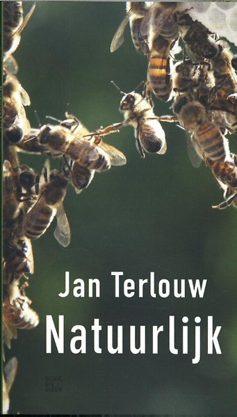
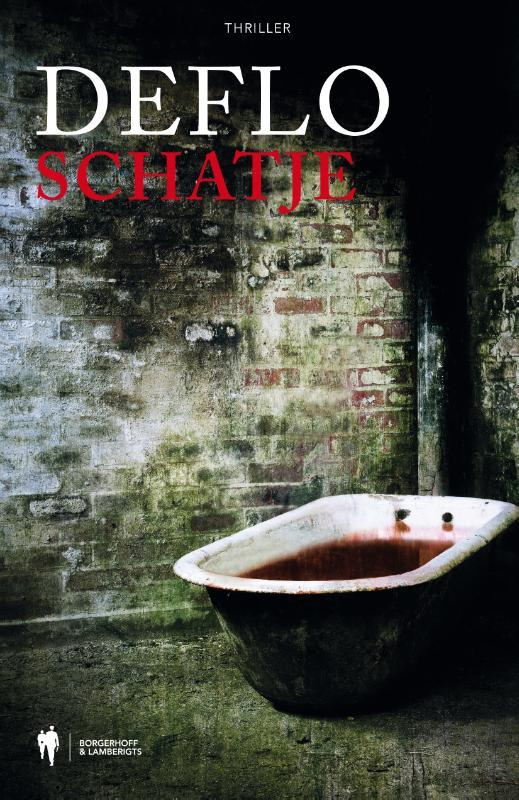
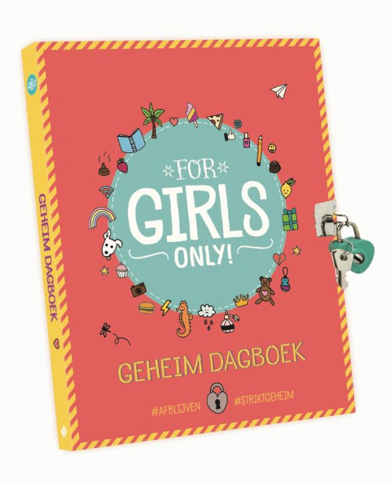
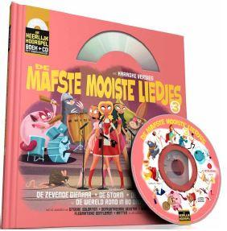
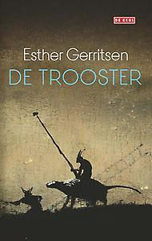

Nieuwe Boeken

Natuurlijk
Jan Terlouw
Geboren in een boerendorp op de Veluwe, groeide Jan terlouw op tussen de natuur. Hij klom in bomen, bestudeerde bijenvolken en hielp kalfjes geboren worden. Natuur werd voor hem een onuitputtelijke bron van inspiratie, door de schoonheid.

Patiëntveiligheid
B. de Vries
De auteurs hebben in Patiëntveiligheid, Systematische Incident Reconstructie en Evaluatie (SIRE) de ervaringen verwerkt die zij hebben opgedaan bij het uitvoeren van, en onderwijs geven in, SIRE.

De waanzinnige boomhut van 91 verdiepingen
Andt Griffiths
Kom op bezoek bij Andy en Terry in hun waanzinnige, nóg grotere boomhut! Draai rondjes in de krachtigste draaikolk ter wereld, maak een reisje met een onderzeebootbroodje, spoel aan op een onbewoond eiland.

Schatje
Luc Deflo
De 18-jarige Myrthe krijgt een berichtje van haar nieuwe liefj e, Tom, en dus rijdt ze met de fiets naar hun geheime liefdesnestje. Wanneer ze echter om 4 uur 's ochtends nog niet terug thuis is, slaat haar moeder alarm.

Geheim dagboek
Ruthje Goethals
Er gebeurt heel wat in je leven en de dagen vliegen voorbij! Daarom is het goed om even stil te staan bij de gebeurtenissen van de voorbije dag. Heb je iets grappigs meegemaakt? Heb je een oogje op iemand? Ben je verdrietig? Heb je een geheim dat je met niemand wil delen?

Donuteconomie
Kate Raworth
De economische wetenschap ligt in duigen. De financiële crisis werd niet voorspeld, laat staan voorkomen. Achterhaalde economische theorieën hebben een wereld mogelijk gemaakt waarin nog steeds extreme armoede heerst, terwijl de allerrijksten elk jaar rijker worden.

De mafste, mooiste liedjes
Paul Wauters
Waarom maan-roos-vis lézen als je het kan zingen als een eilandmonster? Zink uit volle borst mee met echte zeebonken, spoor als een ontspoorde trein, schud je hoofd van Indi-links naar Indi-rechts, hef een knaaglied aan met de ratten.

De trooster
Esther Gerristen
Geheel tegen de regels van het klooster in wordt een nieuwe gast opgevangen door Jacob, de conciërge. Aanvankelijk stelt Jacob, zich bewust van de hiërarchie binnen de orde, zich terughoudend op. Maar gaandeweg groeit er een verstandhouding tussen de gelovige conciërge en de gast die een misdaad op zijn geweten heeft.

De stilte van het water
Norman Jansen
'De stilte van het water' geeft een bijzondere inkijk in de schokkende wereld van de mensenhandel. Gebaseerd op waargebeurde feiten en deels autobiografisch, volgt dit verhaal het leven van een jonge moeder in haar zoektocht naar een veilig en beter bestaan voor zichzelf en haar gezin.